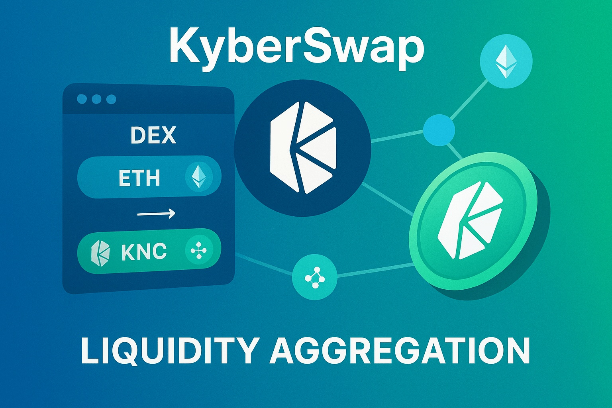
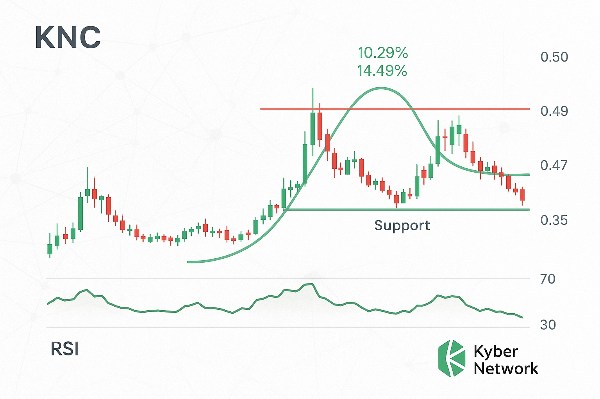

Kyber Network Crystal v2 Price Prediction for End of 2025: In-Depth Analysis and Insights
The information in this article is provided for educational purposes only and is not investment advice. Cryptocurrency investments carry risks.
Introduction
As of August 21, 2025, 12:34 AM EEST, Kyber Network Crystal v2 (KNC) is trading at approximately $0.42, serving as the utility and governance token of the Kyber Network, a decentralized exchange (DEX) protocol focused on aggregating liquidity for ERC-20 token swaps. Operating on Ethereum and integrated with platforms like Polygon and Binance Smart Chain, Kyber Network facilitates efficient trading through KyberSwap and supports DeFi applications. Despite recent market challenges, KNC’s role in DeFi and its token-burning mechanism provide potential for growth. This article analyzes KNC’s price outlook for the end of 2025, exploring bullish and bearish scenarios, growth drivers, and risks based on market trends and technical data.
Current Situation
KNC is currently priced at $0.42, with a market cap of $78.54 million, ranking it #424 in the crypto ecosystem. Over the past 24 hours, KNC has decreased by $0.01 (-2.33%), and over the past week, it has fallen by 7.62%. The past 30 days show a 45.43% increase, adding $0.19 to its value, with 15 green days (50%) and a volatility of 22.47%. The Fear and Greed Index at 73 (Greed) suggests optimistic market sentiment. Over the past year, KNC has delivered a negative return of 43.83%, trading 92.67% below its all-time high of $5.72 from April 2022. The circulating supply is 187.47 million KNC, with no fixed maximum supply due to its token-burning mechanism.
Price Predictions for End of 2025
Analyst forecasts for KNC by December 2025 vary due to its volatile price history and DeFi market dynamics. Below are the key projections based on available data:
- Bearish Scenario: Some analysts predict a decline to $0.06–$0.41, particularly if DeFi adoption slows or a projected 30–40% market correction occurs in early 2025, as forecasted by WalletInvestor and TradingBeast.
- Moderate Scenario: Projections suggest KNC trading between $0.43 and $0.74, supported by steady KyberSwap usage and token-burning, according to PricePrediction.net and MEXC.
- Bullish Scenario: Optimistic forecasts estimate KNC reaching $1.12–$2.27, driven by increased DeFi adoption, successful protocol upgrades, and a market rally in early 2025, as predicted by Cryptopolitan, Binance, and Cryptonewsz. Highly speculative projections suggest $4.48–$14.87, though these are less likely due to market cap constraints.
Reaching $10 or surpassing its all-time high of $5.72 is considered improbable by 2025 due to a required market cap exceeding $1.87 billion and current bearish technicals. Most analysts project a range of $0.43–$1.58, with an average around $0.72.
Factors Driving Price Growth
- DeFi Adoption: Growing use of decentralized exchanges and liquidity protocols could increase demand for KNC, especially with KyberSwap’s integration across multiple blockchains.
- Token-Burning Mechanism: Fees collected from KyberSwap transactions are partially burned, reducing KNC’s circulating supply and potentially increasing value.
- Protocol Upgrades: Continuous improvements, such as faster transactions and lower fees, could attract more users and liquidity providers.
- Market Rally: A projected cryptocurrency market surge from February to April 2025 could lift KNC’s price, particularly if altcoins outperform.
- KyberDAO Governance: Community governance through KyberDAO enhances decentralization, potentially boosting investor confidence.
Risks and Downward Factors
- Market Volatility: A projected 30–40% market correction in early 2025 could push KNC’s price lower, given its 22.47% volatility.
- Competition: Strong competition from other DEXs like Uniswap, SushiSwap, and Bancor could limit Kyber’s market share.
- Technical Risks: Delays or issues with protocol upgrades could undermine investor confidence and adoption.
- Regulatory Risks: Stricter global regulations on DeFi and cryptocurrencies could restrict Kyber’s accessibility and growth.
- Bearish Technicals: A falling 50-day moving average and neutral RSI (within 30–70) indicate short-term weakness, with potential resistance at $0.4984.
Volatility Analysis
From July to August 2025, KNC’s price rose from $0.39 to $0.42, a 7.69% gain, but with high volatility of 22.47%. Technical indicators show a bearish trend, with the 50-day moving average sloping down and the 200-day moving average rising, indicating mixed signals. The Relative Strength Index (RSI) at 67.34 suggests neutral conditions, close to overbought. A projected market recovery in early 2025 could support growth, but competition and technical risks may cap significant upside. KNC’s price is correlated with Ethereum, and successful protocol upgrades could drive adoption and price appreciation.
Conclusion
By the end of 2025, KNC’s price is projected to range between $0.43 and $1.58, with a potential high of $2.27 in a bullish scenario driven by DeFi adoption, token-burning, and a market rally. However, bearish risks, including competition, regulatory pressures, and market volatility, could push prices as low as $0.06. Reaching $10 or its all-time high of $5.72 is unlikely due to market cap constraints. Investors should conduct thorough research and manage risks carefully due to KNC’s volatility and competitive landscape.